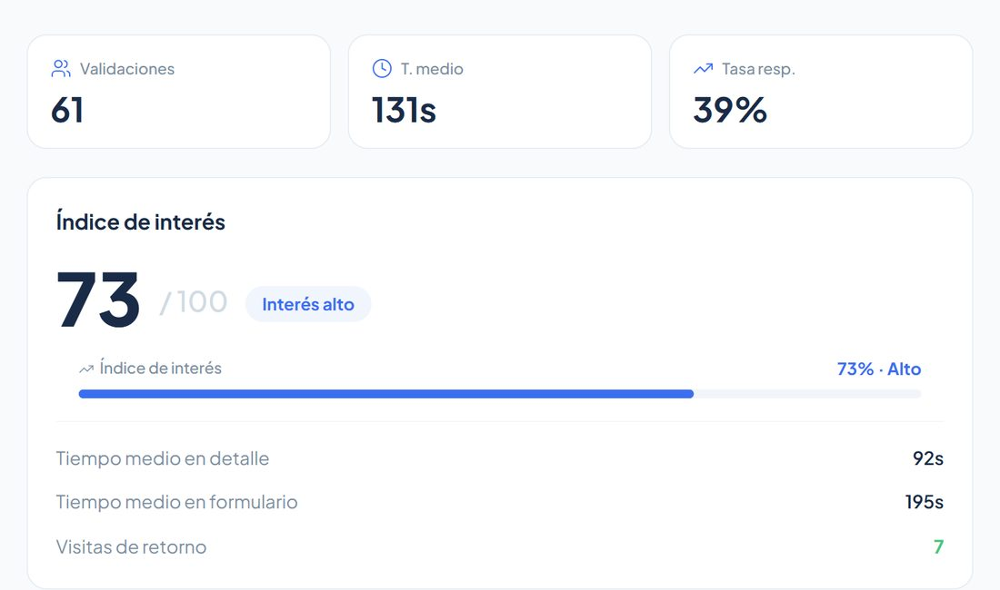
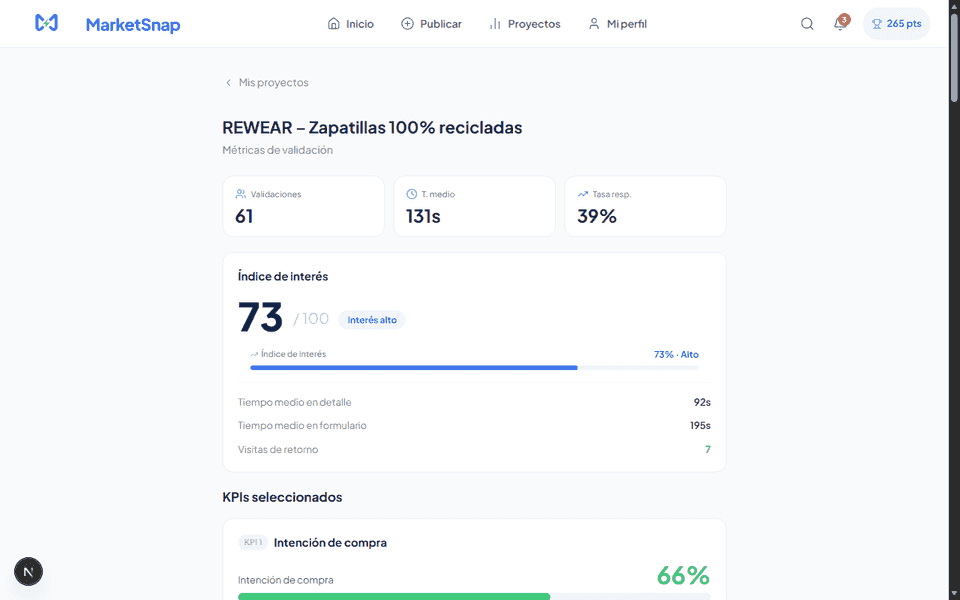
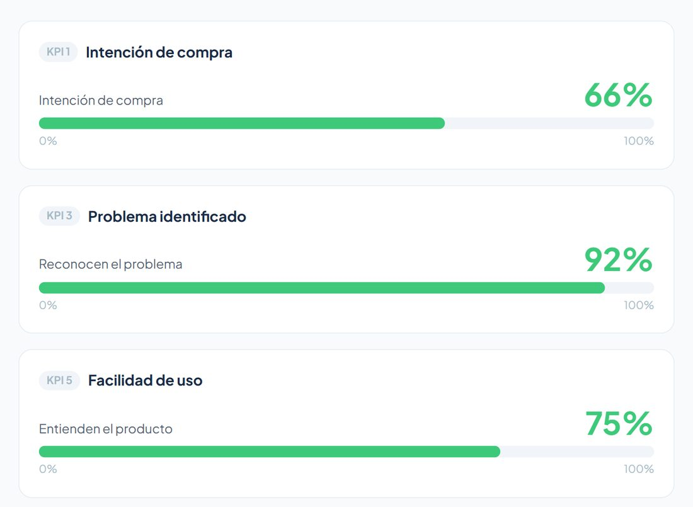
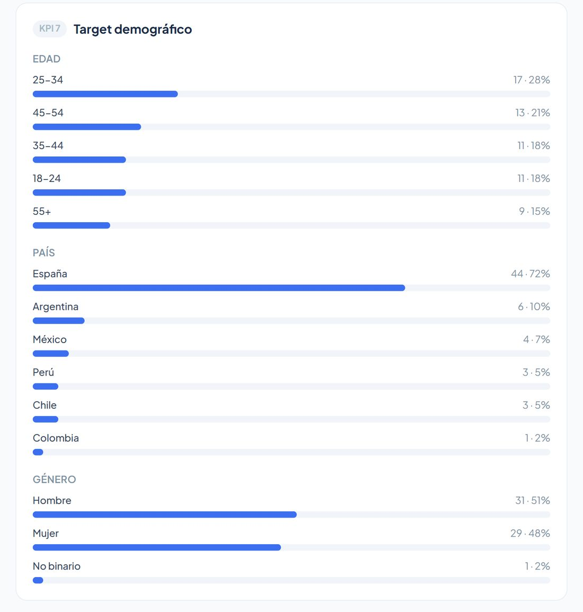
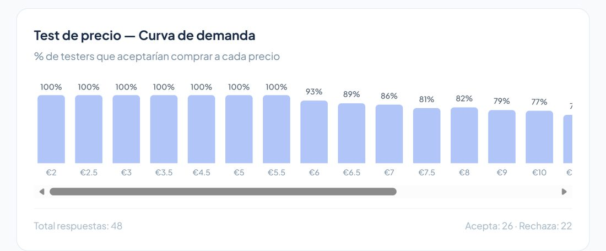
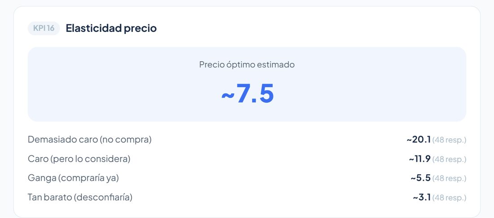
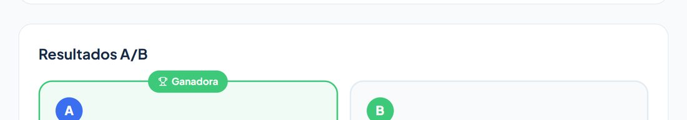
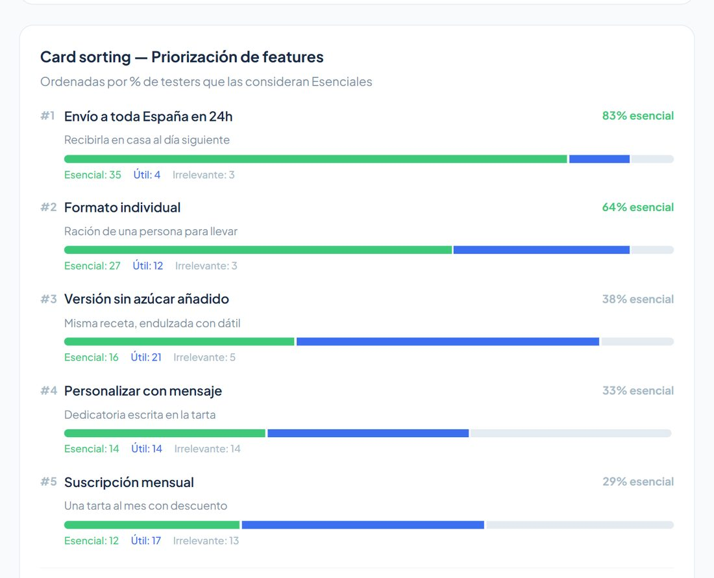
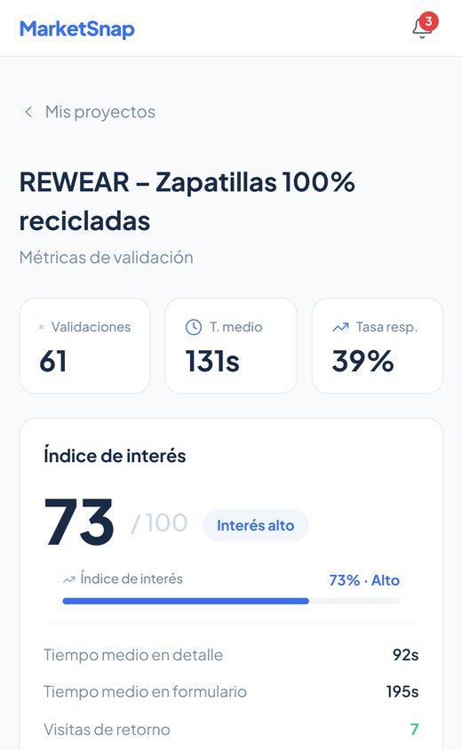

Producto · Santander X ExplorerProduct · Santander X Explorer
Validar una idea sin preguntarle a nadie si le gustaValidating an idea without asking anyone if they like it
MarketSnap publica una idea de negocio ante usuarios reales y la puntúa midiendo lo que hacen, no lo que dicen: 16 KPIs, cuatro metodologías de validación y un índice de interés propio construido sobre el tiempo real de lectura.MarketSnap publishes a business idea to real users and scores it by measuring what they do, not what they say: 16 KPIs, four validation methodologies, and a custom interest index built on actual reading time.
El problema: las encuestas mientenThe problem: surveys lie
Validar un negocio suele reducirse a enseñárselo a gente y preguntar si lo compraría. Esa respuesta no vale nada: se dice que sí por educación, nadie se juega dinero en una encuesta, y el emprendedor sale convencido de una idea que nadie ha querido nunca de verdad.Validating a business usually means showing it to people and asking whether they'd buy. That answer is worthless: people say yes out of politeness, nobody bets money on a survey, and the founder walks away convinced of an idea nobody ever actually wanted.
El índice de interés no pregunta nada: mide cuánto tiempo pasa alguien leyendo la idea y pesa más si esa misma persona vuelve a entrar a releerla. Volver es la señal que no se puede fingir.The interest index asks nothing: it measures how long someone spends reading the idea and weights it higher when that same person comes back to read it again. Returning is the signal you can't fake.


Cuatro metodologías en un mismo productoFour methodologies in one product
Cada idea se valida con el método que le corresponde, no con un cuestionario genérico. El tester nunca sabe qué se está midiendo.Each idea is validated with the method that fits it, not a generic questionnaire. The tester never knows what's being measured.
Validación por KPIsKPI validation
El cuestionario se genera automáticamente a partir de los KPIs elegidos: intención de compra, reconocimiento del problema, claridad de la propuesta, NPS, market fit, barreras de entrada, momento de compra, canal preferido y target demográfico.The questionnaire is generated automatically from the chosen KPIs: purchase intent, problem recognition, proposition clarity, NPS, market fit, entry barriers, purchase timing, preferred channel and demographic target.


El target demográfico no se declara: se deduce de quién respondió y cómo respondió.The demographic target isn't declared — it's derived from who answered and how.
Test de precio — Van WestendorpPrice test — Van Westendorp
A cada tester se le enseña un precio aleatorio del rango y se le pregunta si compraría. De ahí sale la curva de demanda por tramos y los cuatro umbrales de Van Westendorp —demasiado caro, caro, ganga, sospechosamente barato— que devuelven un precio óptimo estimado.Each tester is shown a random price from the range and asked whether they'd buy. That produces the demand curve by price band and the four Van Westendorp thresholds — too expensive, expensive, bargain, suspiciously cheap — which return an estimated optimal price.


A/B test de anuncioAd A/B test
Al tester se le asigna una variante y nunca ve la otra. El sistema marca la ganadora y desglosa los KPIs de cada versión por separado.The tester is assigned one variant and never sees the other. The system flags the winner and breaks down each version's KPIs separately.

Card sorting de funcionalidadesFeature card sorting
El tester clasifica cada funcionalidad en esencial, útil o irrelevante. El resultado es una priorización de producto ordenada por porcentaje de testers que la consideran imprescindible — un roadmap salido del usuario, no de una reunión.The tester sorts each feature into essential, useful or irrelevant. The result is a product priority list ordered by the share of testers who call it essential — a roadmap that comes from users, not from a meeting.

El producto completoThe full product
Además del motor de métricas: feed con matching demográfico, panel del emprendedor con control del ciclo de vida del proyecto, asistente de publicación, sistema de puntos y recompensas para el tester, alertas de negocio, y una ruta corta con código QR para validar en eventos presenciales. Todo funciona también como PWA en móvil.Beyond the metrics engine: a feed with demographic matching, a founder dashboard with project lifecycle control, a publishing wizard, a points-and-rewards system for testers, business alerts, and a short QR route for validating at in-person events. It all works as a mobile PWA too.
